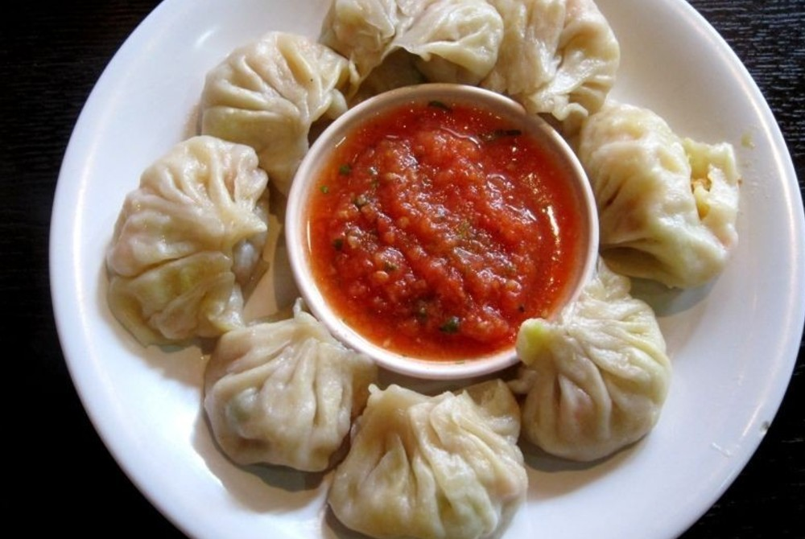

Veg Momos

Description
Making vegetarian momos with a spicy red chutney.
Momos is one of the most popular dishes from Nepal and Tibet.
These are also known as Dim Sum and are basically dumplings made from flour with a savory stuffing.
Learn to make these popular Tibetan recipe of easy vegetable momos from scratch.
The recipe is vegan.
Ingredients
- 1 cup all-purpose flour
- Finely Chopped Veggies of your choice-(Cabbage, Carrots, French beans, Onions)
- Oil, and Salt to taste
Steps
- Make the dough
- Add oil and garlic in the oil
- Put the finely chopped veggies with salt and pepper to taste
- Make small rolls of dough and roll them thin
- Add the stuffing to the dough in the center
- Steam or fry the dough with the stuffing
- grind green chillis, and tomatoes together with some garlic for serving the momos with a spicy chutney
Back to Recipes